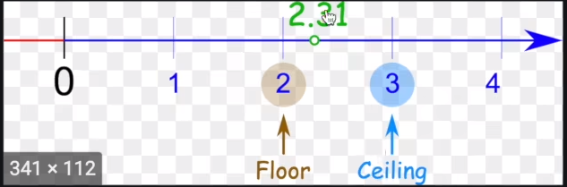
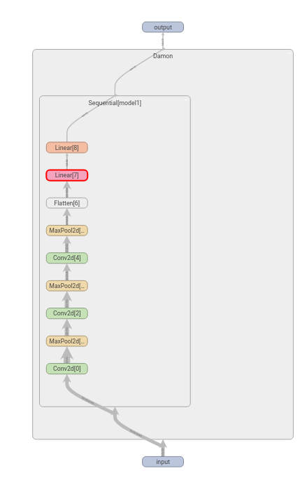

Pytorch入门笔记 参考资源：bilibili - 我是土堆 https://www.bilibili.com/video/BV1hE411t7RN/?spm_id_from=333.999.0.0&vd_source=9761a01d2f08a7425632b3ad97cccf18
一、 数据加载与预处理 1. pytorch加载数据 Dataset的使用
1 2 3 4 5 6 7 8 9 10 11 12 13 14 15 16 17 18 19 20 21 22 23 24 25 26 27 28 29 30 31 32 33 34 35 36 from torch.utils.data import Dataset from PIL import Image import os class MyData(Dataset): def __init__(self, root_dir, label_dir): self.root_dir = root_dir self.label_dir = label_dir self.path = os.path.join(self.root_dir, self.label_dir) self.img_path = os.listdir(self.path) def __getitem__(self, index): img_name = self.img_path[index] img_item_path = os.path.join(self.root_dir, self.label_dir, img_name) img = Image.open(img_item_path) label = self.label_dir return img, label def __len__(self): return len(self.img_path) root_dir = 'dataset/Type1/train' ants_label_dir = 'ants' bees_label_dir = 'bees' ants_dataset = MyData(root_dir, ants_label_dir) bees_dataset = MyData(root_dir, bees_label_dir) train_dataset = ants_dataset + bees_dataset img, label = train_dataset[0]
2. TensorBoard的使用 用于训练模型的时候显示图像（LOSS曲线）等
1 2 3 4 5 6 7 8 9 10 11 12 13 14 15 16 17 18 19 20 21 22 23 from torch.utils.tensorboard import SummaryWriter import numpy as np from PIL import Image writer = SummaryWriter("logs") img_path = 'dataset/Type1/train/ants/6240329_72c01e663e.jpg' img = Image.open(img_path) img_array = np.array(img) writer.add_image('test', img_array, 1, dataformats='HWC') # 显示图像 # for i in range(100): # writer.add_scalar('y = x', 2*i, i) # 显示标量数据 # writer.add_scalar() writer.close()
在终端输入：
1 tensorboard --logdir=logs
在浏览器中即可看到显示的图像
Transforms主要是对图像进行一些变换
a. Transforms 应该如何使用
1 2 3 4 5 6 7 8 9 10 11 from PIL import Image from torchvision import transforms img_path = "dataset/Type1/train/ants/6743948_2b8c096dda.jpg" img = Image.open(img_path) tensor_trans = transforms.ToTensor() # 对象实例化 tensor_img = tensor_trans(img) print(tensor_img)
b. 为什么需要使用tensor的数据类型
tensor可以简单粗暴的理解为将图片等传统的数据封装为神经网络所需的数据类型
c. 常见的transforms
Compose
在我理解compose是将多个图像操作合起来了，例如将图像先裁剪再转换为tensor格式
ToTensor
1 2 tensor_trans = transforms.ToTensor() tensor_img = tensor_trans(img)
Normalize
1 2 trans_norm = transforms.Normalize([0.5, 0.5, 0.5], [0.5, 0.5, 0.5]) # mean std img_norm = trans_norm(tensor_img)
Resize
RandomCrop
4. torchvision中的Dataset使用 1 2 3 4 5 6 7 8 9 10 11 12 13 14 15 16 17 18 19 20 21 22 23 24 25 26 27 28 29 import torchvision from torch.utils.tensorboard import SummaryWriter dataset_transform = torchvision.transforms.Compose([ torchvision.transforms.ToTensor() ]) train_set = torchvision.datasets.CIFAR10(root="./my_dataset", train=True, download=True, transform=dataset_transform) test_set = torchvision.datasets.CIFAR10(root="./my_dataset", train=False, download=True, transform=dataset_transform) # dataset_transforms = torchvision.transforms.Compose([]) # img.show() writer = SummaryWriter('pic10') print(test_set[0]) for i in range(10): img, target = test_set[i] writer.add_image('pic', img, i) writer.close()
5. DataLoader的使用 DataLoader参数说明：
1 2 3 4 5 6 7 8 9 10 11 12 13 14 15 16 17 18 19 20 21 22 23 24 25 26 import torchvision from torch.utils.data import DataLoader from torch.utils.tensorboard import SummaryWriter dataset_transform = torchvision.transforms.Compose([ torchvision.transforms.ToTensor() ]) test_data = torchvision.datasets.CIFAR10("./my_dataset", train=False, transform=dataset_transform, download=True) test_loader = DataLoader(dataset=test_data, batch_size=128, shuffle=True, num_workers=0, drop_last=False) img, target = test_data[0] print(img.shape) print(target) writer = SummaryWriter('dataloader') step = 0 for data in test_loader: imgs, targets = data # print(imgs.shape) # print(targets) writer.add_images("dataloader", imgs, step) step = step + 1 writer.close()
二、神经网络 6. 神经网络基本骨架nn.Module的使用 1 2 3 4 5 6 7 8 9 10 11 12 13 14 15 import torch from torch import nn class Damon(nn.Module): def __init__(self): super().__init__() # 调用父类的方法 def forward(self, input): output = input + 1 return output damon = Damon() x = torch.tensor(1.0) output = damon(x) print(output)
7. 卷积操作
torch.nn是对torch.nn.function的封装，一般会torch.nn即可
conv2d()函数操作
1 2 3 4 5 6 7 8 9 10 11 12 13 14 15 16 17 18 19 20 import torch import torch.nn.functional as F input = torch.tensor([[1, 2, 0, 3, 1], [0, 1, 2, 3, 1], [1, 2, 1, 0, 0], [5, 2, 3, 1, 1], [2, 1, 0, 1, 1]]) kernel = torch.tensor([[1, 2, 1], [0, 1, 0], [2, 1, 0]]) input = torch.reshape(input, (1, 1, input.shape[0], input.shape[1])) kernel = torch.reshape(kernel, (1, 1, kernel.shape[0], kernel.shape[1])) output = F.conv2d(input, kernel, stride=1, padding=1) print(output)
8. 卷积层 torch.nn.Conv2d(in_channels, out_channels, kernel_size, stride=1, padding=0, dilation=1, groups=1, bias=True, padding_mode=’zeros’, device=None, dtype=None)
– in_channels： 输入图像的通道数，一般彩色图像都是33的卷积核） （1，2）（即1 2的卷积核，不规则卷积核），定义的时候只需要设定卷积核大小，卷积核的值会自动采样得到
1 2 3 4 5 6 7 8 9 10 11 12 13 14 15 16 17 18 19 20 21 22 23 24 25 26 27 28 29 30 31 32 33 34 35 36 37 38 import torch import torchvision from torch import nn from torch.nn import Conv2d from torch.utils.data import DataLoader from torch.utils.tensorboard import SummaryWriter dataset = torchvision.datasets.CIFAR10("./my_dataset", train=False, transform=torchvision.transforms.ToTensor(), download=True) dataloader = DataLoader(dataset, batch_size=64) class Damon(nn.Module): def __init__(self): super(Damon, self).__init__() self.conv1 = Conv2d(in_channels=3, out_channels=3, kernel_size=3, stride=1, padding=0) def forward(self, x): x = self.conv1(x) return x damon = Damon() writer = SummaryWriter('./logs') step = 0 for data in dataloader: step = step + 1 imgs, targets = data output = damon(imgs) # print(output.shape) writer.add_images('input', imgs, step) # output = torch.reshape(output, (-1, 3, 30, 30)) # output = output.view(-1, 3, 30, 30) writer.add_images('output', output, step)
9. 池化层 最大池化又称下采样
torch.nn.MaxPool2d(kernel_size, stride=None, padding=0, dilation=1, return_indices=False, ceil_mode=False)
– stride (Union[int, Tuple[int, int]]) – the stride of the window. Default value is kernel_size （区别卷积层的default是1）
– padding (Union[int, Tuple[int, int]]) – Implicit negative infinity padding to be added on both sides
– dilation (Union[int, Tuple[int, int]]) – a parameter that controls the stride of elements in the window （设置空洞卷积）
– return_indices (bool) – if True, will return the max indices along with the outputs. Useful for torch.nn.MaxUnpool2d later
– ceil_mode (bool) – when True, will use ceil instead of floor to compute the output shape （default = false）

1 2 3 4 5 6 7 8 9 10 11 12 13 14 15 16 17 18 19 20 21 22 23 24 25 26 27 28 29 30 31 32 33 34 35 36 37 38 39 40 41 import torch import torchvision from torch import nn from torch.nn import MaxPool2d from torch.utils.data import DataLoader from torch.utils.tensorboard import SummaryWriter dataset = torchvision.datasets.CIFAR10(root='./my_dataset', train=False, transform=torchvision.transforms.ToTensor(), download=True) dataload = DataLoader(dataset, batch_size=64) # input = torch.tensor([[1, 2, 0, 3, 1], # [0, 1, 2, 3, 1], # [1, 2, 1, 0, 0], # [5, 2, 3, 1, 1], # [2, 1, 0, 1, 1]], dtype=torch.float32) # input = torch.reshape(input, (-1, 1, 5, 5)) class Damon(nn.Module): def __init__(self): super(Damon, self).__init__() self.maxpool1 = MaxPool2d(kernel_size=3, ceil_mode=False) def forward(self, input): output = self.maxpool1(input) return output damon = Damon(); writer = SummaryWriter('logs') step = 0 for data in dataload: step = step + 1 imgs, targets = data output = damon(imgs) writer.add_images('maxpool', output, step) writer.close()
10. padding层 对输入图像周围进行填充
eg：nn.ZeroPad2d
Pads the input tensor boundaries with zero.
11. 非线性激活 非线性变换的主要目的就是为了给网络中引入一些非线性特征
eg:–ReLu:
1 2 3 4 5 6 7 8 9 10 11 12 13 14 15 16 17 18 19 20 import torch from torch import nn from torch.nn import ReLU input = torch.tensor([[1, -0.5], [-0.2, 3]]) class Damon(nn.Module): def __init__(self): super(Damon, self).__init__() self.relu1 = ReLU() def forward(self, input): output = self.relu1(input) return output damon = Damon() output = damon(input) print(output)
– sigmoid
1 2 3 4 5 6 7 8 9 10 11 12 13 14 15 16 17 18 19 20 21 22 23 24 25 26 27 28 29 30 31 32 import torch import torchvision from torch import nn from torch.nn import Sigmoid from torch.utils.data import DataLoader from torch.utils.tensorboard import SummaryWriter dataset = torchvision.datasets.CIFAR10(root='./my_dataset', train=False, transform=torchvision.transforms.ToTensor(), download=True) dataloader = DataLoader(dataset, batch_size=64) class Damon(nn.Module): def __init__(self): super(Damon, self).__init__() self.sigmoid1 = Sigmoid() def forward(self, input): output = self.sigmoid1(input) return output damon = Damon() writer = SummaryWriter('./logs') step = 0 for data in dataloader: step = step + 1 imgs, targets = data output = damon(imgs) writer.add_images('sigmoid', output, step) writer.close()
12. 线性层及其它层
正则化层
Recurrent Layers
Transformer Layer
线性层1 2 3 4 5 6 7 8 9 10 11 12 13 14 15 16 17 18 19 20 21 22 23 24 25 26 27 import torch import torchvision from torch import nn from torch.nn import Linear from torch.utils.data import DataLoader dataset = torchvision.datasets.CIFAR10("./my_dataset", train=False, transform=torchvision.transforms.ToTensor(), download=True) dataloader = DataLoader(dataset, batch_size=64) class Damon(nn.Module): def __init__(self): super(Damon, self).__init__() self.linear1 = Linear(196608,10) def forward(self, input): output = self.linear1(input) return output t = Damon() for data in dataloader: imgs, targets = data imgs = torch.flatten(imgs) output = t(imgs) print(output.shape)
Dropout Layer
Flatten 展平
13. NN 搭建实战和Sequential的使用 a. Sequential的使用
1 2 3 4 5 6 7 8 9 10 11 12 13 14 15 model = nn.Sequential( nn.Conv2d(1,20,5), nn.ReLU(), nn.Conv2d(20,64,5), nn.ReLU() ) model = nn.Sequential(OrderedDict([ ('conv1', nn.Conv2d(1,20,5)), ('relu1', nn.ReLU()), ('conv2', nn.Conv2d(20,64,5)), ('relu2', nn.ReLU()) ]))
b. CIFAR10 Network_model
Tips：使用TensorBoard中的add_graph可以将网络展开成如下形状，便于直观检查网络的问题
1 2 3 writer = SummaryWriter('./logs') writer.add_graph(damon, input) writer.close()

1 2 3 4 5 6 7 8 9 10 11 12 13 14 15 16 17 18 19 20 21 22 23 24 25 26 27 28 29 30 31 32 33 34 import torch from torch import nn from torch.nn import Conv2d, MaxPool2d, Flatten, Linear, Sequential from torch.utils.tensorboard import SummaryWriter class Damon(nn.Module): def __init__(self): super(Damon, self).__init__() self.model1 = Sequential( Conv2d(3, 32, 5, padding=2), MaxPool2d(2), Conv2d(32, 32, 5, padding=2), MaxPool2d(2), Conv2d(32, 64, 5, padding=2), MaxPool2d(2), Flatten(), Linear(1024, 64), Linear(64, 10) ) def forward(self, input): output = self.model1(input) return output damon = Damon() input = torch.ones((64, 3, 32, 32)) output = damon(input) writer = SummaryWriter('./logs') writer.add_graph(damon, input) writer.close()
三、 pytorch应用 14. 损失函数与反向传播 a. Loss Fun的作用
1 2 3 4 5 6 7 8 9 for data in dataloader: imgs, targets = data output = damon(imgs) print(output) print('target:', targets) loss = celoss(output, targets) loss.backward() print('loss:', loss) exit()
15. 优化器 a. 优化器的使用套路
定义一个优化器，设置模型参数和学习率等参数optim = torch.optim.SGD(damon.parameters(), lr=0.01)optim.zero_grad()loss.backward()optim.step()
1 2 3 4 5 6 7 8 9 10 11 12 13 14 15 16 17 18 damon = Damon() # instantiation celoss = nn.CrossEntropyLoss() # Loss definition optim = torch.optim.SGD(damon.parameters(), lr=0.01) for epoch in range(20): run_loss = 0.0 for data in dataloader: optim.zero_grad() imgs, targets = data output = damon(imgs) loss = celoss(output, targets) loss.backward() optim.step() run_loss = run_loss + loss print(run_loss)
b. 学习率
学习速率太大，模型训练起来就很不稳定
一般先用大的学习速率，再用小的学习速率
16. 现有模型的加载使用与修改 1 2 3 4 5 vgg16_raw = torchvision.models.vgg16() # 加载VGG16 vgg16_raw.add_module('my_linear', nn.Linear(1000, 10)) # 在vgg16后面加线性层 vgg16_raw.classifier.add_module("my_linear2", nn.Linear(100, 100)) # 在vgg16的classifier后面加线性层 vgg16_raw.classifier[6] = nn.Linear(4096, 10) # 修改vgg16的classifier的6号网络层为Linear(4096, 10)
17. 网络模型的保存与读取 1 2 3 4 5 6 7 8 9 10 11 12 13 14 15 16 # raw method vgg16 = torchvision.models.vgg16() **# save method1:** torch.save(vgg16, "vgg16_method1.pth") # load method1: model1 = torch.load("vgg16_method1.pth") # ------------------------- **# save method2:** （官方推荐的方式） torch.save(vgg16.state_dict(), 'vgg16_method2.pth') # load method2: model2 = torch.load("vgg16_method2.pth") # only load model parameter, not contains the construction of the model vgg16.load_state_dict(torch.load("vgg16_method2.pth"))
18. 完成的模型训练套路（以CIFAR10为例） a. 使用正确率评估模型（分类问题中特有的评价指标）
完整的代码在github的project子文件夹下 train.py, 模型在model.py里
b. 训练模型的一些细节
有的人在训练前会加damon.train()/在验证前加damon.eval()等字样，这个不是必须的，这个代码只对某些层有效（例如Dropout、BatchNorm等），但是如果自己的网络里有这些特殊的层，就必须在训练/测试前调用这些代码
19. 使用GPU进行训练 a. 第一种方法
1 2 damon = Damon() damon = damon.cuda()
b. 第二种方法
device = torch.device(‘cpu’) # 使用CPU
1 2 3 4 device = torch.device('cpu') damon = Damon() damon = damon.to(device)
更常见的一种方式：device = torch.device("cuda" if torch.cuda.is_available() else "cpu")
c. 如果自己没有GPU可以去谷歌的colab蹭
18. 完成的模型测试套路 核心：利用已经训练好的模型吗，给他提供输入，进行模型推理
步骤：找测试数据（eg：图片）-> reshape到模型接受的大小 -> 输入模型推理
Attention: 如果模型实在GPU上训练的，那么使用CPU推理，在加载时需要制定map_location，即：
1 model = torch.load('model.pth', map_location=torch.device('cpu'))
19. 看看开源项目 1.